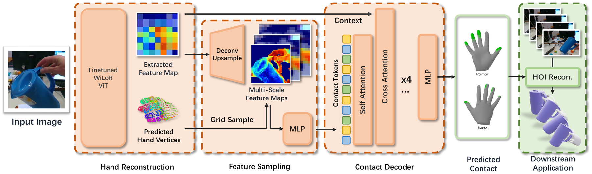
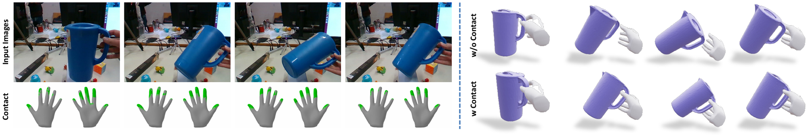

VACO: Vertex-Aligned Decoding for Dense Hand Contact Estimation from a Single Image
1State Key Lab of CAD & CG, Zhejiang University, China
2Zhejiang University of Technology, China
* Equal contribution. † Corresponding author.
arXiv preprint
TL;DR — A shared contact query never learns where a vertex sits in the image. VACO lets every MANO vertex read the pixels under its own projection, and still runs as a single feed-forward pass.
Abstract
Dense hand contact estimation from a single RGB image is a foundational primitive for dexterous manipulation and 3D interaction analysis. Direct predictors typically decode the entire per-vertex contact map from one shared query, leaving individual vertices ungrounded in the image and smearing contact across adjacent, non-touching surfaces. We present VACO, a vertex-aligned decoder in which each MANO vertex samples local image features at its projected location. A hand-reconstruction backbone, jointly trained for reconstruction and contact, predicts these locations at inference without an auxiliary reconstructor. Training uses noise-perturbed ground-truth projections and end-to-end feature adaptation to improve robustness and contact-sensitive features. A single VACO checkpoint sets a new state of the art on five benchmarks spanning hand–object, hand–human, hand–scene, and bimanual interactions. It improves F1 by +20.7 pp over the strongest prior direct predictor on Hi4D and generalizes to the held-out HOT3D and HOCap, with gains of +5.5 and +2.7 pp. The resulting contact predictions also improve downstream HOI reconstruction.
Method
VACO keeps the feed-forward speed of direct prediction and removes its structural blind spot: instead of asking one query to imagine the whole hand, it asks every vertex to look at the image where that vertex actually is.

Given a single RGB image, VACO predicts a binary contact label for each of the 778 MANO vertices. A WiLoR backbone encodes the image into a feature pyramid and regresses the hand mesh; projecting that mesh yields one query per vertex, anchored at its own pixel on the image plane. A lightweight Transformer decoder turns these vertex-aligned queries into contact probabilities, reading both the features under each vertex and the full image for context.
Because a predicted mesh carries pose error, training samples at ground-truth projections perturbed with image-plane Gaussian noise, and the shared backbone is optimized jointly for contact and reconstruction. At inference, the predicted mesh replaces these training projections.
Results
One checkpoint, trained once on a unified 0.6M-frame pool, evaluated without any per-benchmark fine-tuning. The first three datasets are in-domain; starred columns are held out from training.
| Method | DexYCBHand–Object | Hi4DHand–Human | RICHHand–Scene | HOT3D*Hand–Object | HOCap*Hand–Object |
|---|---|---|---|---|---|
| DECO | .224 / .314 / .199 | .390 / .394 / .343 | .167 / .123 / .126 | .211 / .352 / .205 | .085 / .120 / .075 |
| FollowMyHold† | .228 / .521 / .245 | — | — | .127 / .317 / .128 | .132 / .512 / .180 |
| HACO | .590 / .800 / .657 | .668 / .709 / .653 | .741 / .899 / .781 | .502 / .727 / .560 | .351 / .775 / .461 |
| VACO (ours) | .606 / .859 / .693 | .811 / .943 / .860 | .818 / .908 / .840 | .579 / .723 / .615 | .367 / .842 / .488 |
Swipe the table horizontally to see all datasets.
Each cell is precision / recall / F1 on the binary per-vertex contact mask under HACO's proximity protocol. * held-out datasets. † FollowMyHold is evaluated on 100 samples per split, at its reported thresholds; “—” denotes settings where it is not applicable. Best per column in bold.
What the numbers say
- In-domain: +3.6 pp F1 on DexYCB, +20.7 pp on Hi4D and +5.9 pp on RICH over HACO. The largest gain lands on heavily occluded hand–human interaction, where cross-finger smearing hurts most.
- Held out: +5.5 pp on HOT3D and +2.7 pp on HOCap with no fine-tuning, i.e. the gain survives unseen viewpoints and bimanual grasps.
Downstream: Physically Grounded HOI Reconstruction
Contact is not only a prediction target. Thresholded at 0.52 and plugged into AGILE as an SDF-based contact loss, predicted contact vertices are pulled toward the object surface from both sides, leaving every other AGILE term untouched.

| HO3D-v3 (right hand) | CD (mm) ↓ | F@5 (%) ↑ | F@10 (%) ↑ |
|---|---|---|---|
| AGILE | 23.11 ± 22.77 | 12.07 ± 8.15 | 30.43 ± 16.75 |
| + HACO contact | 16.16 ± 9.39 | 13.96 ± 5.50 | 34.74 ± 12.71 |
| + VACO contact | 12.46 ± 8.65 | 15.32 ± 4.79 | 37.87 ± 11.15 |
Mean ± std over four HO3D-v3 test sequences held out from training (AP14, MPM13, SB11, SM1); only AP14's object instance is unseen during training. Every row runs the same AGILE pipeline and changes only the source of the contact mask; swapping in HACO's mask recovers roughly 60% of the gain between AGILE and VACO.
BibTeX
@article{vaco2026,
title = {VACO: Vertex-Aligned Decoding for Dense Hand Contact
Estimation from a Single Image},
author = {Ye, Binhong and Shi, Jin-Chuan and Liu, Tao
and Wang, Xin and Chen, Hao and Shen, Chunhua},
journal = {arXiv preprint arXiv:2611.17755},
year = {2026}
}